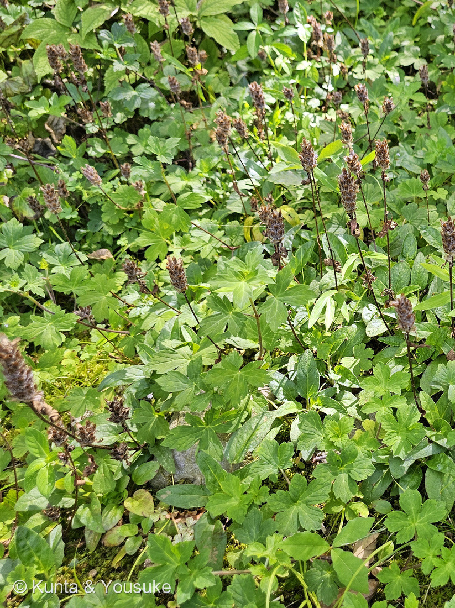
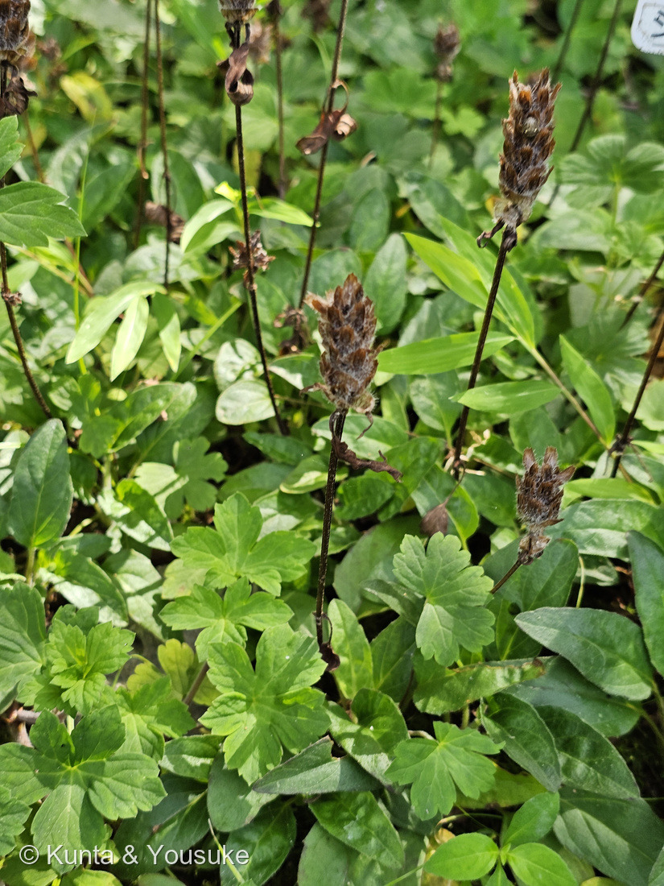
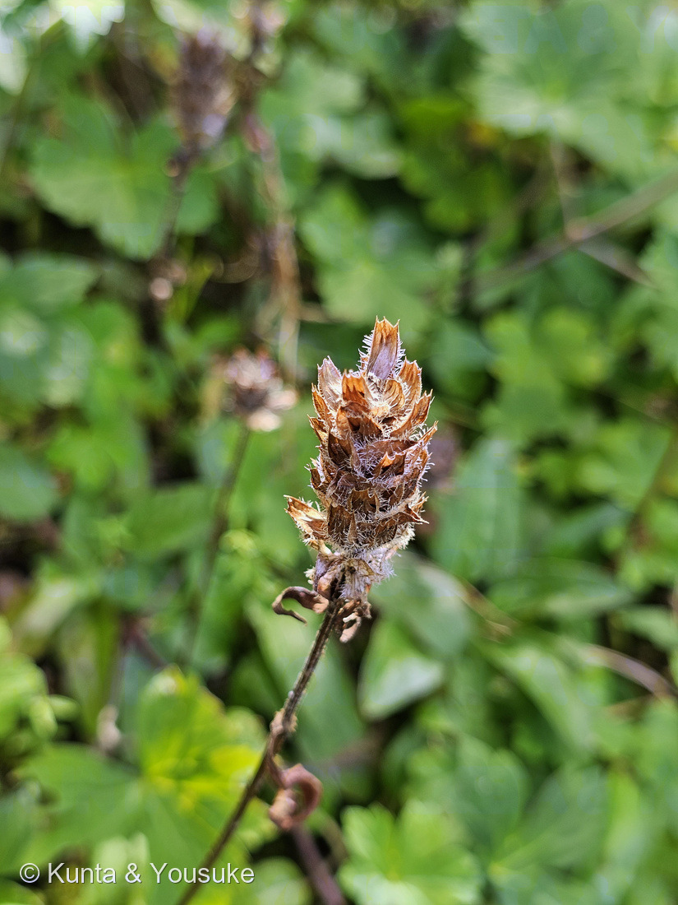
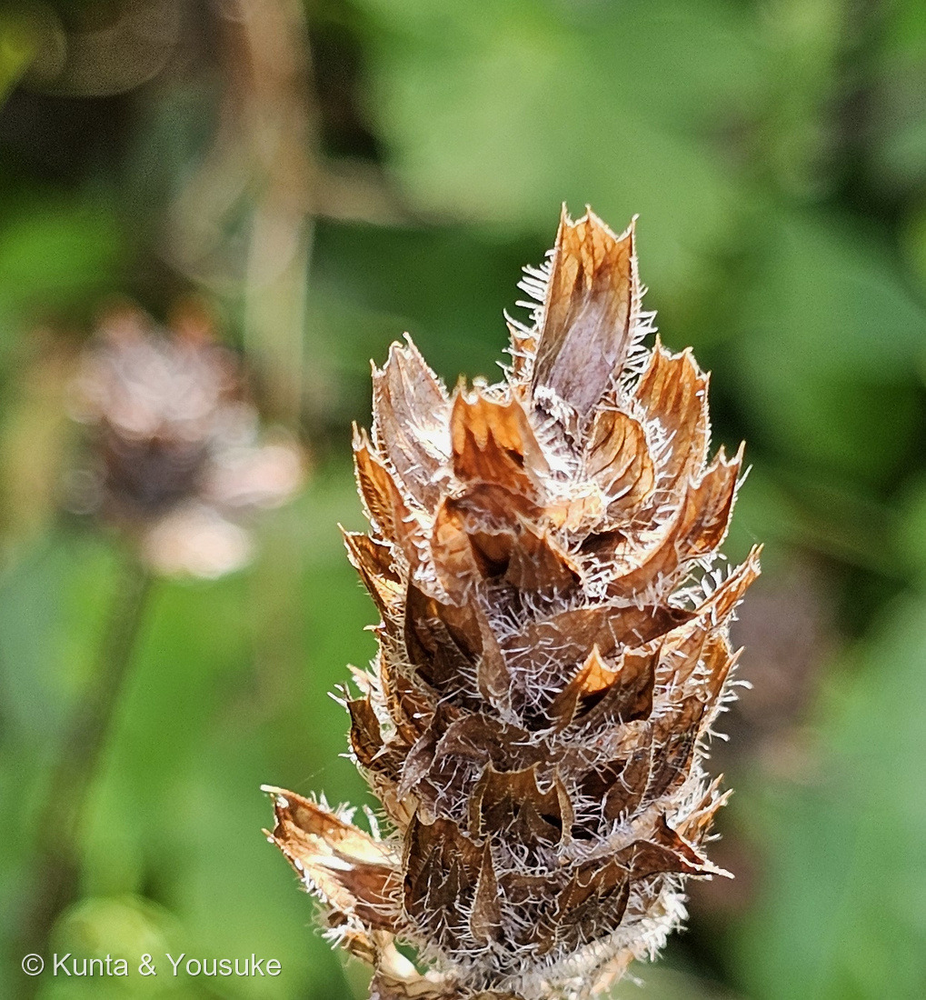
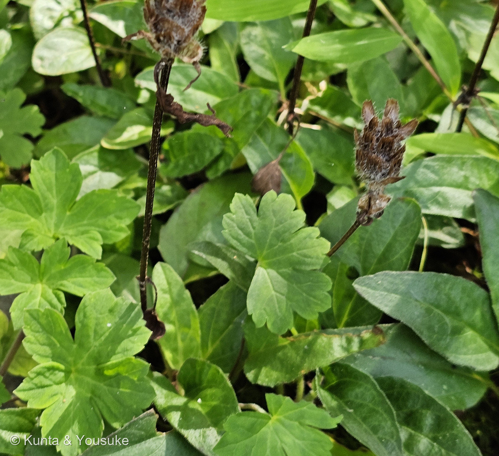

地図を読み込んでいるよ…
🔍 写真も地図も、押しているあいだ拡大して見られるよ（スマホは指を置いてすこし待ってね）。
🌍 の地図＝この子がもともと自生している場所を緑に。日本（北海道・本州・四国・九州）、朝鮮、中国（安徽省・黒竜江省・江蘇省・江西省・吉林省・遼寧省・山東省・山西省・浙江省）の在来種。日当たりのよい山野の草原や路傍に群生する。くわしくは下の地図の説明を見てね。
⭐日本の草だよ。三河の植物観察は分布を「在来種 北海道、本州、四国、九州、朝鮮、中国」とし、中国はさらに「安徽省、黒竜江省、江蘇省、江西省、吉林省、遼寧省、山東省、山西省、浙江省」と挙げている＝⭐だから中国は、その9つの省だけを塗ってあるよ（⚠267 シラカシのときのように省をぜんぶ塗ってはいない）。⭐⭐日本は北海道から九州まで、まるごと緑＝山野の日当たりのよい草原や路傍に群生する、ごくふつうの草。⚠⚠ここでいちばん大事なのは、ヨーロッパが緑じゃないこと＝⭐よく似た「セイヨウウツボグサ」（基本種 subsp. vulgaris）はヨーロッパ・アジア・北アフリカに広く分布するけれど、日本に自生はない（三河の植物観察）＝⭐あちらは花穂が2〜4cmと短く、花も約13mmと小さいんだって。⚠ぼくらが会ったのは広島市植物公園の中＝植えられた株だけれど、この緑の中の草でもあるよ。⭐同じシソ科では071 ハマゴウも日本の在来種＝⭐⭐あちらは海べの砂地、こちらは山野の草原だね。
⚠ 地図は国（日本と中国だけ県・省）までしか塗れないから、ほんとうの分布より広く見えていることがあるよ。地図はだいたいの場所。正確なところは、上の文を見てね。
ウツボグサ（靫草）
Prunella vulgaris L. subsp. asiatica (Nakai) H.Hara
別名 カゴソウ（夏枯草）／ナツカレクサ 原産 日本（北海道〜九州）・朝鮮・中国の在来種
シソ科 · Lamiaceae（ウツボグサ属 Prunella・シソ目 Lamiales）── ⭐10人目のシソ科／⚠科は103のまま／⭐⭐でも図鑑ではじめての「日本の野生のシソ科」（ハーブでも園芸種でもない、山野に群生する在来の草）
燻太さんの言葉「いわれてみれば、空穂っていう道具に似ているのかな？ 自分には、この花穂自体が矢に見えるかも。」「シソ科にしては渋い色の花穂だねって、これは既に枯れているからか。」「花穂の下に生えている葉っぱは、他の植物の葉っぱかな？」── ⭐⭐⭐3つとも、そのままこのページの3つの節になったよ
⭐⭐⭐⭐ 名前と由来 ── 「靫」は矢を入れる筒。でも燻太さんには「矢」に見えた

⑤ 苞の重なりと、ふちに並ぶ白い毛 🔍 押しているあいだ拡大して見られるよ。
⭐ 瓦のように重なって、先が外へ反り返る苞。そしてふちにびっしり並ぶ白い毛 ── この2つが、下のお話につながるよ。
- 和名の由来＝日本語版Wikipedia「『靫草』の名は、花穂の形を矢を入れておく道具である靫（うつぼ）に見立てたものである」。三河の植物観察も「和名は花穂が矢の携帯用収納武具のウツボ（空穂）に似ていることに由来」とする。
- ⭐では「靫」とは何か＝「矢を納めて射手の腰や背につける細長い筒」「ふつう竹製で漆塗り」、そして⭐「上に毛皮や鳥毛・毛氈の類を張ったものもある」（コトバンク）。古墳時代に盛んに使われた武具で、武人埴輪にも表されているよ。
⭐⭐⭐ そして、燻太さんの「花穂自体が矢に見えるかも」も、すごくよく分かる。——写真⑤を見て。⭐苞が瓦のように重なって、先が外へ反り返り、ふちに白い毛がびっしり並んでいる＝矢羽根を束にしたように見えるでしょう。
⭐⭐ しかも、もうひとつ重なるところがあったんだ。——⭐靫には「毛皮や鳥毛を張ったもの」があった（コトバンク）。そして枯れた花穂も、白い毛におおわれている。＝⭐入れ物のほうも、毛でおおわれていたんだね。
→ ⭐⭐⭐ 「筒（入れ物）」と見るか、「矢（中身）」と見るか。昔の人は入れ物を見て、燻太さんは中身を見た。⭐どちらも同じ「弓矢の道具」を見ているのが、おもしろいね。
- ⭐図鑑には、もうひとり「矢」の名前の子がいる＝210 ヤノネボンテンカ（矢の根＝矢じりのような葉）。⭐あちらは葉の形、こちらは花穂の形だよ。
- 学名 Prunella＝ウツボグサ属／vulgaris＝「ふつうの」／asiatica＝「アジアの」。⚠基本種のセイヨウウツボグサ（subsp. vulgaris）は日本に自生がなく、花穂が2〜4cmと短く、花も約13mmと小さい（三河の植物観察）。
⭐⭐⭐⭐⭐ この植物のこと ── 「渋い色」の正体は、枯れた花穂だけ
⭐⭐⭐⭐ 燻太さんの見立てが、そのまま当たっていたよ。しかも、それがこの子のもうひとつの名前になっているんだ。
- 花期は5〜8月（三河の植物観察）／6〜8月（日本語版Wikipedia）。⭐ぼくらが会ったのは8月8日＝もう花が終わったあとだった。
- ⭐咲いているときは、ちゃんとシソ科の色をしている＝紫色の唇形花（長さ18〜21mm・三河／1.5〜2cm・日本語版Wikipedia）が、下から上へ咲き進む。→ ⭐渋いのは「この子の色」ではなく、「この子の時期」だったんだね。
- ⭐⭐⭐別名「夏枯草（かごそう・なつかれくさ）」＝日本語版Wikipedia「花が終わると花穂をつけた茎が枯れて褐色になるが、その状態で長く残ることに由来する」／東邦大学薬学部付属薬用植物園「真夏の暑い日、花穂が急に枯れたように褐色になり、まさに立ち枯れた姿になることから『夏枯草』と名前がつきました」。
- → ⭐「秋を待たずに、夏のうちに枯れる草」。⚠でも、枯れているのは花穂だけなんだ（下の節を見てね）。
- 茎は4稜形（四角い）（三河「茎は4稜形、稜には上向きの毛があり、下部は這い、上部は直立する」）＝⭐シソ科の目じるし。⭐146 ミントで顕微鏡でのぞいた「四角い茎」と、同じだよ。
- ⭐生薬「夏枯草（かごそう）」＝「6〜8月、花が終わり枯れかかった花穂を採集し、天日干しにしたものを使用する」（日本語版Wikipedia）。⭐⭐つまり、ぼくらが見たこの茶色い姿こそが、そのまま生薬の姿なんだ。⚠利尿・消炎に用いられるとされるけれど、自分で試すものではないよ。
⭐⭐⭐⭐ 燻太さんの質問 ── 「花穂の下の葉っぱは、他の植物？」

④ 葉のくらべ 🔍 押しているあいだ拡大して見られるよ。
⭐ 右がわ＝細長くて、向かいあわせ（対生）でつく葉＝ウツボグサ自身の葉。／⚠ 左がわ＝まるくて、手のひら状に切れこんだ葉＝別の植物だよ。
⭐⭐⭐ 答えは「半分そう、半分ちがう」。写真④で、3つに分けられるよ。
- ⭐① 茎についている、向かいあわせの細長い葉＝ウツボグサ自身の葉。（三河の植物観察「葉は対生し、下部の葉には長さ1〜2cmの葉柄があり…葉身は長さ3〜4.5cm×幅1〜1.5cmの卵形〜卵状長円形」「縁はわずかに波状〜円鋸歯状の低い鋸歯がある」）＝写真④の右がわ。
- ⭐⭐⭐② 枯れた花穂の足もとにある、みずみずしい緑の葉のかたまりも、この子のもの。——日本語版Wikipedia「花が終わるころから、先端に数対の葉をつけた匍匐枝を伸ばすことが多い」＝⭐⭐上では花穂が枯れながら、下では新しい枝を横に伸ばしている。⭐「夏枯草」なのに、枯れていない部分が、ちゃんとあるんだ。
- ⚠③ でも、地面をおおっている「まるくて、手のひら状に浅く5〜7に切れこんだ、ふちがまるいギザギザの葉」は、別の植物。＝写真④の左がわ。⚠花も実も写っていないので、名前は決められなかった。⭐いちばん近いと思ったのはフウロソウ科（ゲンノショウコのなかま）だけれど、決め手がない。⏳宿題にしておくね。
⭐ 見分けかたのコツ＝ウツボグサの葉は「向かいあわせ（対生）で、細長くて、ふちのギザギザが浅い」／もう一方は「1枚ずつで、まるくて、手のひら状に切れこむ」。
⭐ 10人目のシソ科 ── はじめての「日本の野生のシソ科」
- シソ科は10人目＝015 ホーリーバジル・021 スイートバジル・033 ミント・046 サルビア・071 ハマゴウ・120 セイヨウジュウニヒトエ・146 ミント・175 シソ・180 ブルーサルビア → 270 ウツボグサ。⚠科は増えないので103科のまま。
- ⭐⭐でも、この子は図鑑ではじめての「日本の野生のシソ科」＝ハーブでも園芸種でもなく、山野の草原や路傍に群生する在来の草だよ。
- ⭐下から上へ咲き進む穂は、120 セイヨウジュウニヒトエとも似ているね。
出典：三河の植物観察「ウツボグサ Prunella vulgaris subsp. asiatica」（mikawanoyasou.org）／日本語版Wikipedia「ウツボグサ」／東邦大学薬学部付属薬用植物園「ウツボグサ」（toho-u.ac.jp）／コトバンク「靫（ゆき）」（kotobank.jp）／広島市植物公園（広島市）の園の名札（2026-08-08・⚠名札そのものの写真は公開していないよ）